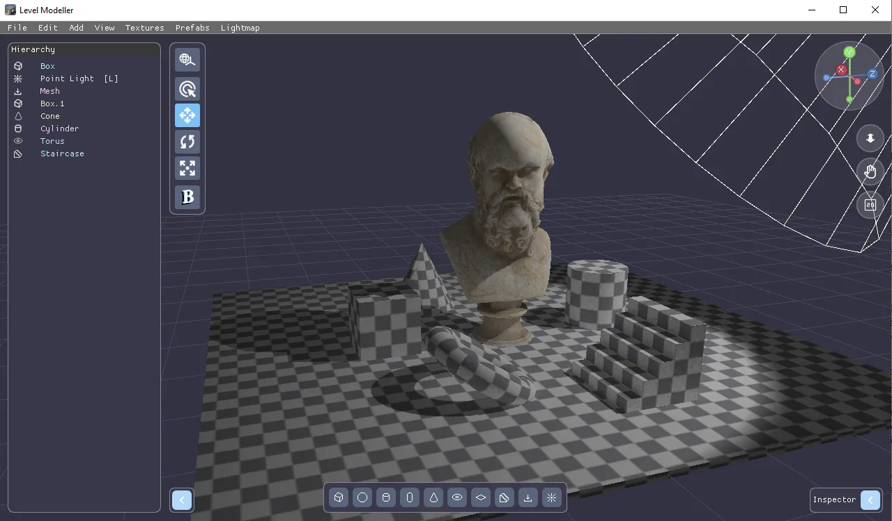
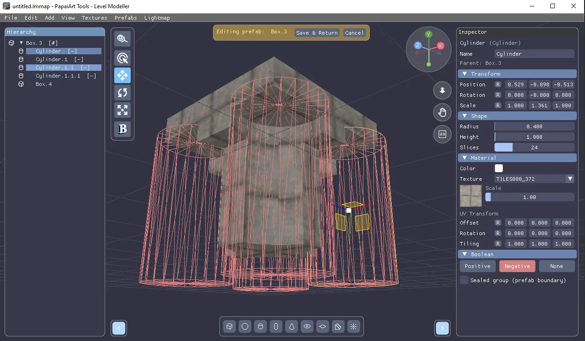
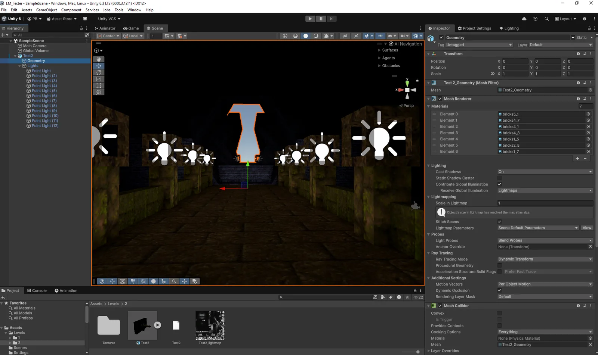
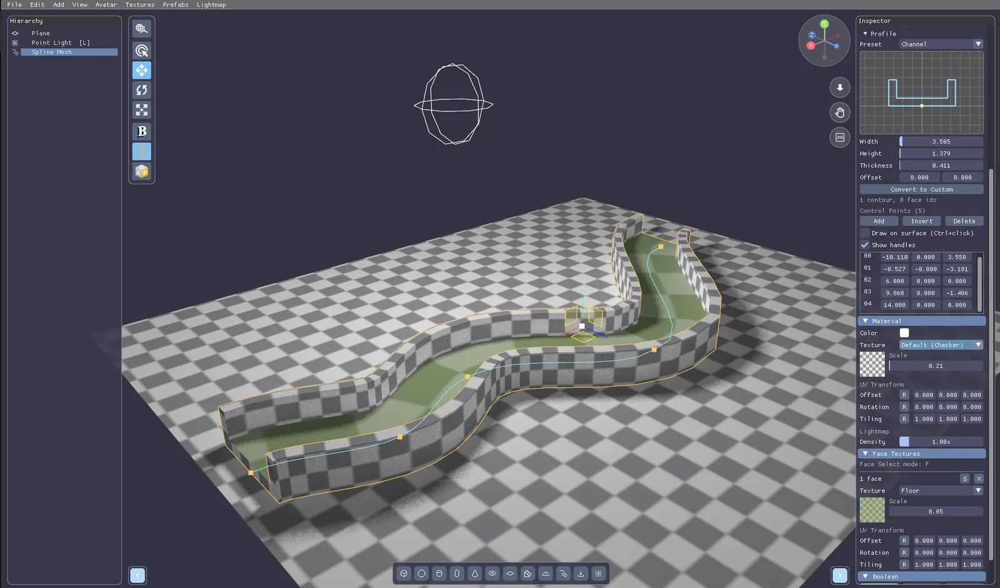
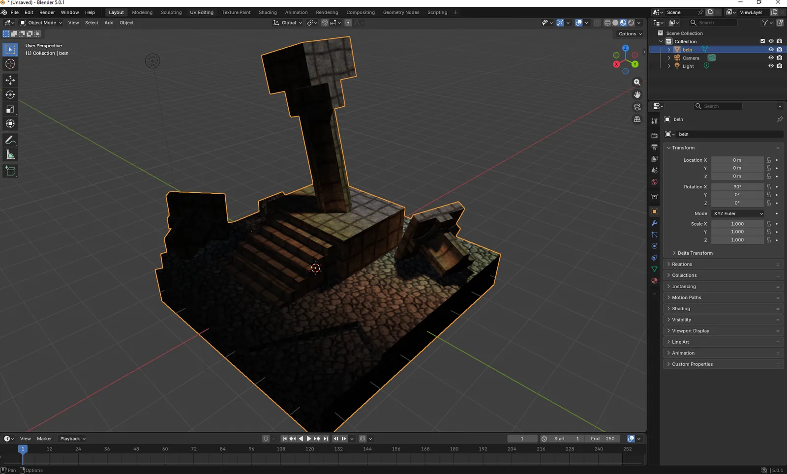

PapaiArt ToolsLevel Modeller
Build levels from primitives and boolean operations the way Quake-era editors did, with a Vulkan renderer, automatic lightmap UVs and a clean mesh at the end.
Releasedv1.7.2Windows$20 · One-time purchase
Build levels from primitives and boolean operations the way Quake-era editors did, with a Vulkan renderer, automatic lightmap UVs and a clean mesh at the end.

Level Modeller is a standalone CSG level editor. Additive shapes add volume, and subtractive shapes cut doorways, windows and corridors out of it. It's the workflow of TrenchBroom or ProBuilder, as a dedicated tool with a Vulkan renderer. Every shape stays a live object in the hierarchy: move it later and the booleans re-evaluate in real time.
Texture with box-projected UVs from a project-wide library, place lights, and bake. The tool generates the lightmap UV channel itself (xatlas) and bakes on the GPU, so there is no manual unwrapping. Export to OBJ, GLB or a Unity bundle and go straight into Unity, Unreal or Godot.
The boolean output goes through a cleanup pass that merges coplanar faces and retriangulates them, so what you export is a clean mesh, not triangle soup. Projects are a single JSON .lmmap file, easy to back up and easy to put in git.
Primitives, positive and negative shapes, and a hierarchy that re-evaluates as you work.

A project-wide texture library, box-projected UVs, and per-face control when you need it.

Place point, spot and directional lights and hit Bake. The unwrap happens by itself.

Curves, spirals and ground, all of which still take part in the booleans.

Playtest in first person with the character your game will use, then export.

12 updates since July 3, 2026. Newest first.

Up to now, putting a wall next to another wall in PapaiArt Tools – Level Modeller meant eyeballing it, squinting at the seam, and then typing coordinates into the Inspector until the gap went away. Your box landed at x…

The Spline Profile editor grew up The newest build is mostly about one thing: the profile editor on Spline Mesh objects was too cramped to actually shape anything in. You can now navigate it, select properly, and…

Some shapes are miserable to build out of boxes. A curved tunnel. A road that bends around a hill. A handrail following a staircase. A pipe run along a ceiling. You can do all of it by hand-placing forty rotated…

Terrain, and a hard look under the hood The feature the level layout has been missing is here, and alongside it went a lot of work on editor speed and on getting the lighting right. Terrain Terrain is a new object type…
Until now the lightmap was one texture, and a bigger level simply meant coarser shadows — the same 2048 px stretched over more square meters. That is backwards: texel density is the quality setting , and the atlas…

Level Modeller devlog - July 12 to August 8 Four weeks of work on PapaiArt Tools - Level Modeller. Less flash this time, more foundation: the boolean result got noticeably cleaner, saved maps got a lot smaller, and a…

You can now texture individual faces! Until now a texture applied to the whole object — from this update, every wall, floor, tread and cut surface can have its own material. A new tool joined the viewport toolbar (or…

Two big features landed in Level Modeller over the last two days: an inside-out room workflow and a configurable FPS avatar — both carried all the way through to the Unity package. Every object now has a Flip…
CSG level design with GPU light baking. Block out, carve, texture, bake and export.